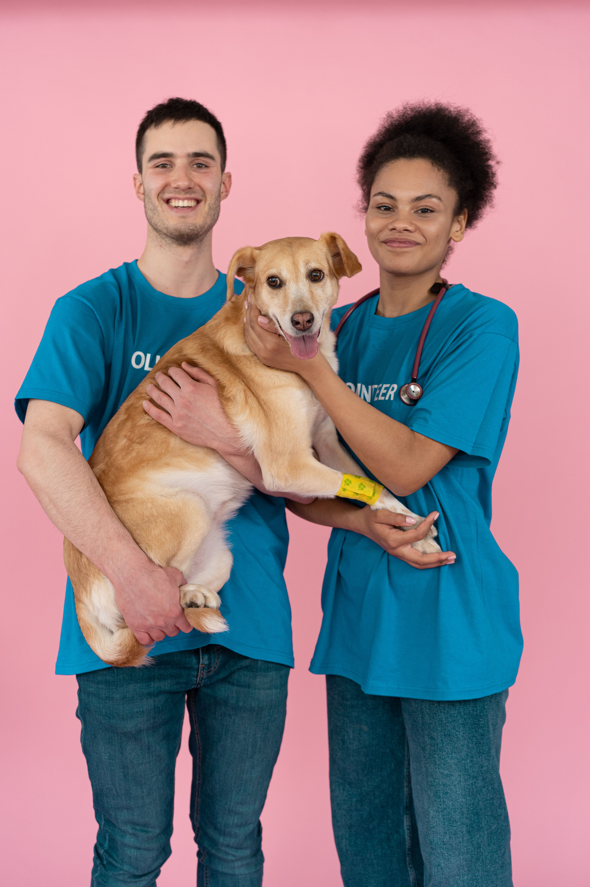
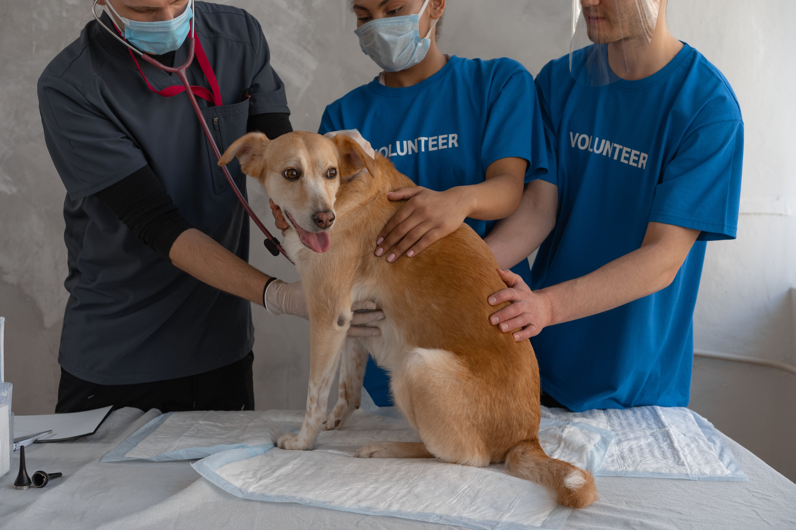

Mission Statement
To rescue, rehabilitate, and rehome abandoned and abused animals while promoting responsible pet ownership through community education and outreach (Humane Society of South Africa, 2023).
Rescue. Rehabilitate. Rehome.
Established in 2018 in Cape Town, South Africa, Paws & Whiskers Rescue began as a small community effort to help stray cats and dogs in the local area (Paws and Whiskers Rescue Facebook, 2024).
What started with a handful of dedicated volunteers has grown into a recognised non-profit organisation that has successfully rehabilitated and rehomed over 1,200 animals to date (Humane Society of South Africa, 2023).

To rescue, rehabilitate, and rehome abandoned and abused animals while promoting responsible pet ownership through community education and outreach (Humane Society of South Africa, 2023).
A South Africa where every animal has a safe and loving home, free from suffering and neglect (National Council of SPCAs, 2021).
